declaration_17.3 <-
declare_model(
N = 500,
control_count = rbinom(N, size = 3, prob = 0.5),
Y_star = rbinom(N, size = 1, prob = 0.3),
potential_outcomes(Y_list ~ Y_star * Z + control_count)
) +
declare_inquiry(prevalence_rate = mean(Y_star)) +
declare_assignment(Z = complete_ra(N)) +
declare_measurement(Y_list = reveal_outcomes(Y_list ~ Z)) +
declare_estimator(Y_list ~ Z, .method = difference_in_means,
inquiry = "prevalence_rate")List experiments
We declare an list experiment design, highlighting that the inquiry is a descriptive one despite the use of an experiment. We then declare a design comparing the list experiment to direct questioning in estimating the prevalence of a sensitive item, and clarify when one survey technology is preferred to the other as a function of sensitivity bias levels and sample size.
Sometimes, subjects might not tell the truth about certain attitudes or behaviors when asked directly. Responses may be affected by sensitivity bias, or the tendency of survey subjects to misreport their answers for fear of negative repercussions if some individual or group learns their true response (Blair, Coppock, and Moor 2020). In such cases, standard survey estimates based on direct questions will be biased. One class of solutions to this problem is to obscure individual responses, providing protection from social or legal pressures. When we obscure responses systematically through an experiment, we can often still identify average quantities of interest. One such design is the list experiment (introduced in Miller (1984)), which asks respondents for the count of the number of “yes” responses to a series of questions including the sensitive item, rather than for a yes or no answer on the sensitive item itself. List experiments give subjects cover by aggregating their answer to the sensitive item with responses to other questions.
For example, Creighton and Jamal (2015) study preferences for religious discrimination in immigration policy among Americans. They worried that direct measures of Americans’ willingness to grant citizenship to Muslims would be distorted by sensitivity bias, so they turned to a list experiment. Subjects in the control and treatment groups were asked: “Below you will read [three/four] things that sometimes people oppose or are against. After you read all [three/four], just tell us HOW MANY of them you OPPOSE. We don’t want to know which ones, just HOW MANY.”
| Control | Treatment |
|---|---|
| The federal government increasing assistance to the poor. | The federal government increasing assistance to the poor. |
| Professional athletes making millions of dollars per year. | Professional athletes making millions of dollars per year. |
| Large corporations polluting the environment. | Large corporations polluting the environment. |
| Granting citizenship to a legal immigrant who is Muslim. |
The treatment group averaged 2.123 items while the control group averaged 1.904 items, for a difference-in-means estimate of 0.219. Under the usual assumptions of randomized experiments, the difference-in-means is an unbiased estimator for the average treatment effect of being asked to respond to the treated list versus the control list. But our (descriptive) inquiry is the proportion of people who would grant citizenship to a legal immigrant who is Muslim.
For the difference-in-means to be an unbiased estimator for that inquiry, we invoke two additional assumptions (Imai 2011):
No design effects: The count of “yes” responses to the control items is the same whether a respondent is assigned to the treatment or control group.
No liars: Subjects with the sensitive trait truthfully increment their count when assigned to the treatment group.
Under these two extra assumptions, the list experimental estimate of the prevalence of opposition to granting Muslim immigrants citizenship is 21.9%.
?fig-daglist represents the list experimental design. The no liars assumption is represented by the lack of an edge from sensitivity bias \(S\) to the list experiment outcome \(Y^L\). The no design effects assumption is not represented on the DAG.

Declaration -1.1 describes a list experimental design. The model includes subjects’ true attitude (Y_star) and whether or not their direct question answers are contaminated by sensitivity bias (S). These two variables combine to determine how subjects will respond when asked directly about support for the policy. The potential outcomes model combines three types of information to determine how subjects will respond to the list experiment: their responses to the three control items (control_count), their true attitude (Y_star), and whether they are assigned to see the treatment or the control list (Z). Our definition of the potential outcomes embeds the no liars and no design effects assumptions.
The inquiry is the prevalence rate of the sensitive item. In the data strategy, we randomly assign 50% of our 500 subjects to treatment and the remainder to control. In the survey, we ask subjects the list experiment question (Y_list). Our answer strategy estimates the prevalence rate by calculating the difference-in-means in the list outcome between treatment and control.
Declaration -1.1 (List experiment design)
Diagnosis -1.1 (List experiment diagnosis)
| Bias | Mean CI width |
|---|---|
| -0.002 | 0.325 |
We see in the diagnosis that the list experiment generates unbiased estimates of the prevalence rate, but it is extremely imprecise: the average width of the confidence interval is enormous at 33 percentage points. If the estimate from a list experiment using this design is 25%, this would imply a confidence interval ranging from about 9% to 41% holding the sensitive item, ranging from rare to common and thus providing only a limited amount of information about the prevalence rate.
The diagnosis above shows that the list experiment (under its assumptions) is unbiased but is high variance. In the presence of sensitivity bias, direct questions are biased, but are much lower variance. The choice between these two technologies therefore amounts to a bias-variance tradeoff (see Blair, Coppock, and Moor (2020) for more on this point). Declaration -1.1 wraps up both approaches in one design so we can compare them.
Declaration -1.2 (Comparing list experiments with direct questions)
declaration_17.4 <-
declare_model(
N = N,
U = rnorm(N),
control_count = rbinom(N, size = 3, prob = 0.5),
Y_star = rbinom(N, size = 1, prob = 0.3),
W = case_when(Y_star == 0 ~ 0L,
Y_star == 1 ~ rbinom(N, size = 1, prob = proportion_hiding)),
potential_outcomes(Y_list ~ Y_star * Z + control_count)
) +
declare_inquiry(prevalence_rate = mean(Y_star)) +
declare_assignment(Z = complete_ra(N)) +
declare_measurement(Y_list = reveal_outcomes(Y_list ~ Z),
Y_direct = Y_star - W) +
declare_estimator(Y_list ~ Z, inquiry = "prevalence_rate", label = "list") +
declare_estimator(Y_direct ~ 1, inquiry = "prevalence_rate", label = "direct")Diagnosis -1.2 (Comparison of list experiment and direct questions diagnosis) Diagnosing this design, we see that at low levels of sensitivity and low sample sizes, the direct question is preferred on RMSE grounds. This is because though the direct question is biased for the prevalence rate in the presence of any sensitivity bias (positive proportion_hiding), it is much more precise than the list experiment. When we have a large sample size, then we begin to prefer the list experiment for its low bias. At high levels of sensitivity, we prefer the list experiment on RMSE grounds despite its inefficiency, because bias will be so large.

Design examples
Coppock (2017) compares direct question and list experimental estimates of support for Donald Trump during the 2016 election, finding no evidence for “shy” Trump supporters who misreport their support for Trump for fear of being perceived as racist or sexist by survey-takers.
Cruz (2019) uses a list experiment to estimate the rate of vote buying in the Philippines, though comparison to direct question estimates yields no evidence of sensitivity bias.